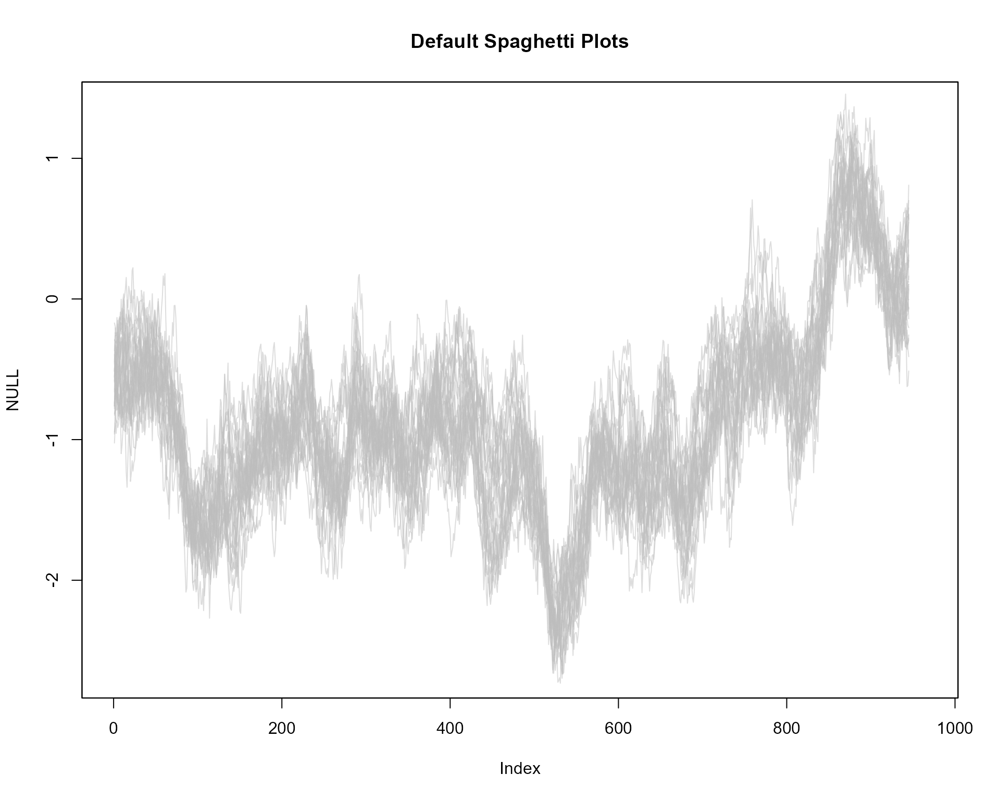

Demo file
Below are some examples of different plotting styles to represent
uncertainty in time series data. All plots are based on the
th.mcmc data, the estimated posterior distributions of the
volatility in daily returns from the Pound/Dollar exchange rate from
02/10/1981 to 28/6/1985. To run the demo file from your R console
(ensure fanplot, zoo, tsbugs, RColorBrewer and colorspace packages are
all installed beforehand). Note, tsbugs is no longer on
CRAN - install with
devtools::install_github("guyabel/tsbugs")
# if you want plots in separate graphic devices do not run this first line...
par(mfrow = c(10,2))
# run demo
demo(sv_fan, package = "fanplot", ask = FALSE)
Below is the code and the individual plots in the demo file
Main arguments
Default plot
library(fanplot)
# trim margins
par(mar=c(2,2,2,1.1))
# empty plot
plot(NULL, xlim = c(1, 965), ylim = range(th.mcmc)*0.85, main="Defaults")
# add fan
fan(th.mcmc)Create a coarser fan
plot(NULL, xlim = c(1, 965), ylim = range(th.mcmc)*0.85, main="Coarser Palette")
fan(th.mcmc, probs = seq(10, 90, 10))Fan with no lines and text
plot(NULL, xlim = c(1, 965), ylim = range(th.mcmc)*0.85, main="Plain")
fan(th.mcmc, ln = NULL, rlab = NULL)
Change contour line colours
plot(NULL, xlim = c(1, 965), ylim = range(th.mcmc)*0.85, main="Black Contour Lines")
fan(th.mcmc, probs = seq(10, 90, 10), ln.col = "black")Transparent fan fill to leave only percentile contour lines
plot(NULL, xlim = c(1, 965), ylim = range(th.mcmc)*0.85, main="Transparent Fill, Black Lines")
fan(th.mcmc, alpha=0, ln.col="black")Prediction intervals
Labels
Include left labels
plot(NULL, xlim = c(-40, 985), ylim = range(th.mcmc)*0.85, main="Include Left Labels")
fan(th.mcmc, type = "interval", llab = TRUE)Selected right labels
plot(NULL, xlim = c(-20, 965), ylim = range(th.mcmc)*0.85, main="User Selected Labels")
fan(th.mcmc, llab=c(0.1,0.5,0.9), rlab=c(0.2,0.5,0.8))Change prefixes of labels
plot(NULL, xlim = c(-50, 995), ylim = range(th.mcmc)*0.85, main="User Named Labels")
fan(th.mcmc, type = "interval", llab = TRUE, rcex = 0.6,
upplab = "Upp ", lowlab = "Low ", medlab="Med")
Colour
Different colour scheme
plot(NULL, xlim = c(1, 965), ylim = range(th.mcmc)*0.85, main="User Colour Ramp")
fan(th.mcmc, probs = seq(10, 90, 10),
fan.col = colorRampPalette(c("royalblue", "grey", "white")))Colours from the colorspace package
library(colorspace)
plot(NULL, xlim = c(0, 965), ylim = range(th.mcmc)*0.85, main="colorspace Library: diverge_hcl Colour Ramp")
fan(data = th.mcmc, fan.col = diverge_hcl) Second colorspace colours example
plot(NULL, xlim = c(0, 965), ylim = range(th.mcmc)*0.85, main="colorspace Library: sequential_hcl Colour Ramp")
fan(data = th.mcmc, fan.col = sequential_hcl ) Colours from the RColorBrewer package
library(RColorBrewer)
plot(NULL, xlim = c(0, 965), ylim = range(th.mcmc)*0.85, main="RColorBrewer Library: Accent Colour Ramp")
fan(data = th.mcmc,
fan.col = colorRampPalette(colors = brewer.pal(8,"Accent")) ) Second RColorBrewer example
plot(NULL, xlim = c(0, 965), ylim = range(th.mcmc)*0.85, main="RColorBrewer Library: Oranges Colour Ramp")
fan(data = th.mcmc,
fan.col = colorRampPalette(colors = rev(brewer.pal(9,"Oranges"))) ) Third RColorBrewer example
plot(NULL, xlim = c(0, 965), ylim = range(th.mcmc)*0.85, main="RColorBrewer Library: Spectral Colour Ramp")
fan(data = th.mcmc,
fan.col = colorRampPalette(colors = brewer.pal(11,"Spectral")) ) Irregular time series
library(zoo)
th.mcmc2 <- zoo(th.mcmc, order.by=svpdx$date)
plot(th.mcmc2[,1], type="n", ylim = range(th.mcmc)*0.85, main="X-Axis Based On (Irregular) Dates")
fan(data = th.mcmc2, rcex=0.5)
Spaghetti plot
plot(NULL, xlim = c(1, 965), ylim = range(th.mcmc)*0.85, main="Default Spaghetti Plots")
fan(th.mcmc, style = "spaghetti")
More transparency in lines
plot(NULL, xlim = c(1, 965), ylim = range(th.mcmc)*0.85, main="Less Transparent Spaghetti Plots")
fan(th.mcmc, style = "spaghetti", alpha = 0.1)More lines, red
plot(NULL, xlim = c(1, 965), ylim = range(th.mcmc)*0.85, main="More Lines, Red")
fan(th.mcmc, style = "spaghetti", ln.col = "red", n.spag = 100, alpha = 0.1)